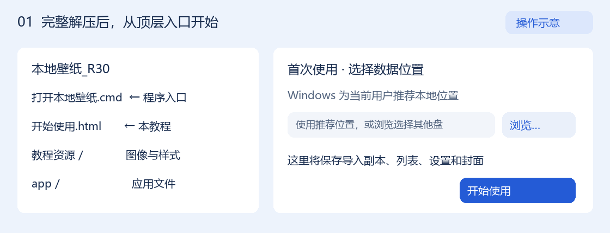
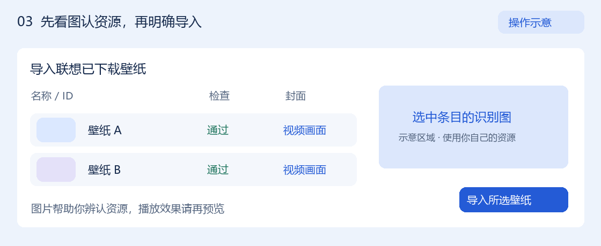
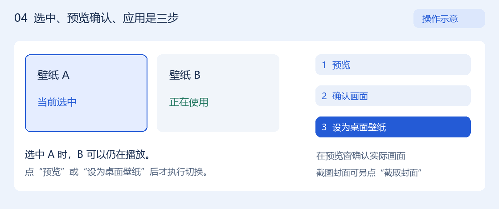
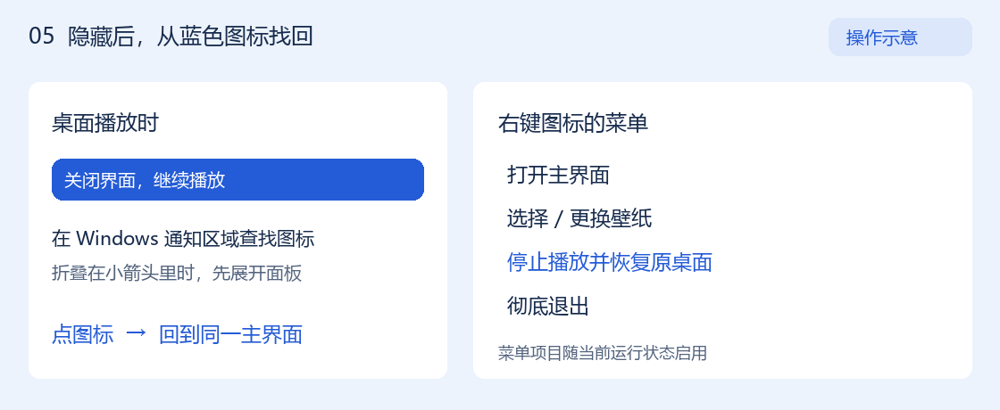

从看见一张壁纸，
到把它放上桌面。
完整解压这个文件夹，打开程序，按自己的电脑准备来源和组件。导入前先看图，选好后再预览、确认与使用。
打开本地壁纸.cmd位于解压后的顶层文件夹
资源与组件由你自行合法取得
01完整解压，再打开程序
- 把整个ZIP解压到普通、可写的本地文件夹。例如自己选定的“本地壁纸”文件夹。保持文件夹层次完整，尽量使用较短路径，避免放在系统安装目录或很深的多层目录。
- 双击顶层的“打开本地壁纸.cmd”。这是本包的启动入口。直接入口同时位于
app/build/LocalWallpaper.exe。保留同文件夹内的app和“教程资源”。 - 需要帮助时，双击“开始使用.html”。浏览器即可离线阅读，图示和样式随包提供。
程序使用Windows桌面环境和.NET Framework 4.x运行环境，自有程序为x86。自动视频图片还使用Windows系统媒体能力。当前真实结果来自一台Windows 11电脑，更多范围见支持说明。

若提示已有本地壁纸实例，请先回到那个实例查看状态。普通重开会尝试显示现有界面。遇到不同版本冲突时，保留提示并联系提供者核对版本。
02第一次使用，选好数据位置
首次出现“首次使用 · 选择数据位置”时，推荐位置来自当前Windows用户的本地应用数据文件夹。可直接点击“开始使用”，也可点“浏览…”选择另一个已有的本机文件夹。
程序会在所选父文件夹下创建 LocalWallpaper/Control 和 LocalWallpaper/Data。界面的“实际数据位置”会显示最终位置。选一个空间充足、日后方便保留的位置。
| 位置 | 用途 | 怎样准备 |
|---|---|---|
| 软件数据 | 库、设置、导入副本、封面、运行记录 | 首次使用选择父文件夹，程序建立自己的Control和Data |
| 壁纸来源 | 读取该电脑已经取得的壁纸缓存 | 自动检查当前用户Roaming下的 lxwp/data，也可点击来源状态浏览或更改 |
| 可选名称缓存 | 从已有联想应用商店缓存补充名称 | 按已支持的本机位置自动尝试读取。缺失、损坏或未知格式时保留原名称或资源ID |
| 播放组件 | 为窗口预览和桌面播放提供本地引擎 | 选择你合法准备、且符合当前固定身份规则的组件目录 |
导入会占用哪里？
通过“导入联想已下载壁纸”明确导入时，程序把原始CWP或视频文件完整复制到软件Data下的 library，并保存来源与登记关系。有封面时保存对应图片，自动视频帧位于同一Data中的图片缓存。空间由你选定的数据盘承担，原始来源缓存继续保留。
“＋ 添加壁纸”用于登记已有CWP，沿用所选原文件路径。请把该CWP保存在稳定位置，移动或删除后该条目可能无法使用。
以前使用过这款软件时，点“以前使用过…”并按提示让提供者核对原数据位置。如果提示已有数据、位置失效或登记损坏，保留提示和原文件，再处理位置问题。
03准备播放条件
本包包含自有程序、宿主和规则。播放所需的第三方二进制与安装文件需要你自行合法准备。目前接受的是身份符合固定23项文件契约的本地组件组合，其他版本或目录内容可能被拒绝。
- 点击首页的“播放组件”状态文字。它位于卡片区上方。没有组件时通常提示“播放组件尚未准备好”或检查未通过的具体原因。
- 选择本机已有的兼容组件根目录。程序核验固定文件的完整身份，并保存通过核验的位置。再次点击正在检查的状态可取消本次核对。
- 通过核验后再点“预览”。启动播放前还会按正式规则重新核验配置和文件身份，实际画面随后由你确认。
组件缺失时，首次配置、来源发现、候选检查、明确导入和卡片管理仍可进行。导入前的视频图片由Windows系统离线解码生成，依赖系统媒体能力。
接收者需要先确认自己准备的组件及资源允许这样配合使用。当前第三方获取、加载配合、必要材料暂存和分发条件仍缺少完整可靠结论。本包没有附带获取或下载工具。条件尚不明确时，可先完成软件数据、来源和导入图片的准备。
运行材料说明。DLL从已核验的安装根加载。程序会在本次运行目录暂存自有宿主、规则以及已核验的必要资源归档 jlwpengine.resc 和 jlwpengine2.resc，正常停止后按现有生命周期清理。身份核验和使用条件需要分别满足。
04先看图，再导入想要的壁纸
- 等待首页检查本机已有来源。只读取已支持的缓存记录和动态壁纸布局。提示“浏览已有来源”时，点击这段来源状态选择已有缓存根。已保存来源失效时，点击带“更改”的来源状态重新选择。
- 点击“导入联想已下载壁纸”。候选会自动排队检查完整身份、文件稳定性和已支持结构。等待检查结束，查看“检查”和“封面”列。
- 选中条目，查看识别图。CWP读取已支持的封面。视频会自动截取开头可识别的一帧，显示为“视频画面”，列表有小图，右侧显示较大的对应图片。
- 确定条目后，点击“导入所选壁纸”。等待复制和登记完成，关闭导入窗口，首页会出现对应卡片。

目录存在只代表可以检查来源。某张壁纸能否导入，要看该条目的正式检查结果。图片用于辨认资源，实际播放效果还要通过窗口预览确认。
完全没有缓存
通过官方正常功能先取得你有权使用的资源，再回来检查。手里已有CWP时可用“＋ 添加壁纸”。
视频暂时没有图片
系统解码能力不足、开头画面无法识别或取帧失败时会显示原因。文件检查通过的条目仍可由你决定是否导入。
单项完整检查有35秒逻辑预算，取帧子步骤有10秒预算。候选较多时会逐项处理，界面显示进度，可使用窗口中的取消操作。
05选中、预览确认，再应用桌面
点击封面表示当前选中。卡片“正在使用”和右侧运行状态表示实际播放项。选中另一张卡片后，原壁纸可以继续运行，点击预览或应用才发起切换。

- 选中首页卡片，点击“预览”。等待本软件的预览窗口显示正常动态画面。按钮不能使用时，先阅读旁边的原因。
- 画面正确时，在预览窗口点击“确认画面”。主界面也有“画面正确，完成确认”。确认保存到本软件中该条目的同一资源身份，资源变化后需要重新确认。
- 正常关闭预览，再点“设为桌面壁纸”。观察桌面是否正常显示。需要换图时，选另一张卡片，按该资源的预览确认状态继续。切换期间等待旧任务停止和新任务准备完成。
想给视频换个更喜欢的封面
在窗口预览播放到喜欢的画面时，点击“截取封面”。已有截图时按钮显示“替换封面”，确认后用新图替换显示。主界面也保留“用当前画面作封面”。保持预览完整可见，正常保存后卡片会刷新，播放确认单独保存。
自动视频帧允许被手动截图替换显示。已有独立原封面受保护。深色、细节过少、被遮挡或未取得画面时，截图可能被拒绝，程序会保留原封面。
黑屏或报错时先停在首个异常，记下资源名称和提示。画面没有显示正常时，保留未确认状态。准备或切换中避免重复点击，必要时使用当前“取消启动”或停止操作。
06隐藏后，从托盘找回
桌面壁纸运行时，点击“关闭界面，继续播放”会隐藏主界面并保留播放。Windows通知区域中的蓝色折框图标是返回入口，可能位于折叠的小箭头面板中。

| 想做什么 | 操作 | 预期结果 |
|---|---|---|
| 找回主界面 | 点击图标，或右键“打开主界面” | 回到现有程序界面 |
| 挑另一张壁纸 | 右键“选择 / 更换壁纸” | 打开现有卡片界面，再由你选择和执行预览或应用 |
| 停止并恢复 | 主界面“恢复原桌面”，或托盘“停止播放并恢复原桌面” | 停止当前桌面壁纸，解除桌面挂载并恢复原桌面 |
| 完全结束程序 | “彻底退出”，或主窗口右上角关闭 | 完成停止、恢复与清理后退出，释放托盘图标 |
同一停止按钮会随状态显示“关闭预览”“恢复原桌面”“取消启动”“正在停止…”或“停止播放”。等待状态结束后再执行下一项。普通重新打开会读回库和设置，登录恢复默认关闭，可在“登录恢复设置”中查看。
07哪些文件会清理，出错怎么办
| 文件 | 生命周期 |
|---|---|
| 已导入的壁纸、登记与设置 | 长期保存在你选择的数据位置。“移除壁纸”是从列表移除，原文件继续保留 |
| 自动视频帧、手动封面与日志 | 作为图片和记录继续保存，可能逐步占用空间，手动替换前的历史图片也可能保留 |
| 本机制创建的运行壁纸副本 | 正常停止并确认相关子进程结束后回收。活动或状态不明的材料安全保留并记录原因 |
| 取帧临时展开视频 | 位于当前检查任务的临时目录，完成、失败或取消后清理 |
| 故障材料 | 保留原错误和必要身份、阶段、结果、清理记录。大运行输入按最多2份且128MiB预算管理，受管总输入512MiB，清理最多尝试3次。无法安全回收导致预算不足时拒绝继续准备 |
这些容量规则只覆盖明确登记的新运行输入。持久库、图片、日志和历史材料有各自用途，总数据目录仍可能增长。来源缓存由原软件维护。
遇到异常时，先保留这次结果
- 黑屏或播放报错 — 保留首个提示，使用现有“关闭预览”或停止入口正常停止，再把现象交给提供者核对。
- 组件核验失败 — 阅读缺少、重复或身份不符的文件说明，核对所选目录和版本。通过核验前，先使用资源检查和导入管理功能。
- 停止或退出异常 — 等待当前提示结束。停止约10秒、退出约12秒逻辑预算后仍未完成时，保留状态和故障记录，联系提供者。
- 提交问题 — 可用“详情与日志”查看本次记录，或在“提交给Agent”中点击“复制交接信息”。“打开证据包文件夹”会显示本地诊断材料，分享前先检查其中路径和个人信息。
常见问题
软件没有找到任何壁纸，该怎么做？
先点首页来源状态中的“浏览已有来源”，选择已有缓存根。已有来源失效时用“更改”。完全没有缓存时，可先经官方正常流程取得有权使用的资源，或用“＋ 添加壁纸”选择已有CWP。
为什么目录有文件，却不能导入？
程序只支持已认识的记录、缓存布局和结构族，必须通过文件身份与路径检查。损坏、变化中或未知格式会给出对应状态，按提示处理该条目。
为什么名字还是资源ID？
名称补充依赖已有可读的本机商店缓存。暂缺名称时继续使用占位名或原名称，依靠图片辨认即可。名称读取失败会保留已保存的可靠名称。
另一张卡片选中了，桌面怎么还是上一张？
选中用于查看和决定下一步，实际运行由“正在使用”标识。点击“预览”或“设为桌面壁纸”才发起播放切换。
可以把我的数据文件夹直接一起发给朋友吗？
本交付ZIP已经使用新用户状态。接收者应按首次使用建立自己的库，准备自己的资源和组件。你的数据目录含个人配置、日志、资源及确认记录，分享时需逐项处理权利与隐私。
这个文件夹移动后还会找到原来的库吗？
完成首次配置后，建议固定程序与数据位置。已有绑定记录会指向该电脑的数据位置，移动程序、跨电脑复制或旧绑定失效时，保留提示并请提供者核对。另一位接收者使用本ZIP建立自己的首次配置。
支持范围与使用条件
软件功能基线为0.1.30-import-video-cover-internal-r30。本次只整理交付结构和教程，沿用原R30已验证身份的自有程序。当前仍按内部阶段成果提供给明确知悉范围的接收者。
| 范围 | 已有结果 | 需要保留的边界 |
|---|---|---|
| CWP | 本机401999、317495、395741等对应操作有分项真实结果。支持已认识的v2及v3结构族 | 任意CWP、未知结构和所有场景效果尚未逐项验证 |
| 402242视频 | R28窗口、桌面及托盘反馈，R29手动封面，R30导入前图片与导入卡片分别通过 | 各版本证据分项保留，R30没有重跑全部旧操作 |
| 398417、403178视频 | 结构检查、实际离线取帧及R30导入窗口图片反馈 | 真实壁纸引擎播放尚无对应通过结论 |
| 系统 | 本机Windows 11环境有实际结果，自有程序为x86 | 其他Windows、多屏、锁屏休眠、Explorer重启及长期稳定性等尚未完整验证 |
已识别视频范围为已知LX本地缓存封装、非碎片MP4、AVC轨道及可选AAC，自动图片要求可用的系统媒体解码能力。包中只提供自有程序和规则，第三方播放组件与壁纸资源由接收者自行合法准备。
历史未登录测试只确认本机新出现395741资源的实际步骤，机器级权益历史尚未排除，资源免费标签也无独立确认。资源取得、账号权益、组件配合使用和再分发条件需要各自核实。
转交前，请把本节的条件一并告知接收者。接收者可先验证首次配置、来源和导入图片，再在具备合法兼容组件后手动进行预览与桌面使用。